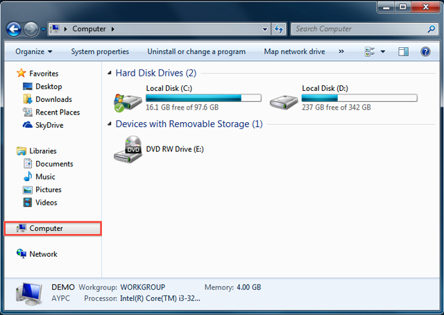

概要
Synology NAS は、ローカル ネットワークで迅速、簡単にファイルを保管したり、共有したりできるように設計されています。わざわざ DSM にログインしなくても、Synology NAS の共有フォルダやファイルに直接アクセスできます。例えば、他のネットワーク デバイスで行うときと同じように、エクスプローラを使って Synology NAS にファイルを保管することができるのです。
エクスプローラでマップする
- エクスプローラを開き、[コンピュータ] を選択します。 
- [ネットワーク ドライブの割り当て] をクリックします。これを実行すると、[ネットワーク ドライブの割り当て] 画面が開きます。
- [ネットワーク ドライブの割り当て] 画面で、[ドライブ] ドロップダウン メニューからドライブ文字を選択します。
- [フォルダ] 欄に Synology NAS のサーバー名と共有フォルダ名をバックスラッシュで区切って入力します。たとえば、Synology NAS の名前が「DiskStation」で共有フォルダ名が「Share1」のときには、「\DiskStation\Share1」と入力してください。入力できたら、［終了］ をクリックします。
- DSM のユーザー名とパスワードを入力します。
- Windows エクスプローラが開きます。共有フォルダはマウントされていますので、[コンピュータ] からアクセスすることができます。


共有フォルダにアクセスできない場合：ここに入力するユーザー アカウントには、アクセスしたい共有フォルダへのアクセス権が与えられていなければなりません。